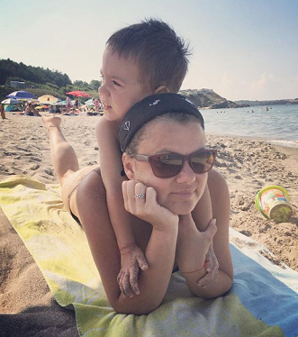

Tudzharova. Yana Tudzharova.
I am Victor's mom for the last three and a half years.
You can see us together everywhere - on a crazy ride with the most famous tram in the world - the Lisbon's tram number 28. Or soaking up the sun in Sinemoretz. Or casually taking a cable car ("el Teleférico") to an amusement park in Madrid.

Fun fact
In Bulgaria we use the Cyrillic alphabet, so my name actually looks like this: Яна Туджарова.
"Bloody Immigrants"
I am originally from a beautiful town on the Black sea, called Burgas. Before moving in to Dublin I was managing a busy hostel in the heart of Sofia. Rent was too high as the building was government's property so I have decided to try something new. Why not living abroad for a while? That was nearly five years ago.
Banks - Cars - Hotels
I have masters degree in Tourism and bachelors in Finance and have worked for Allianz, Volkswagen and Iberostar.
I know, I am 38, and still don't have a clue what I want to be when I grow up...
"MOM! MOM! MOMMY! MAMA!"
Being a single mom (and now a student) is very challenging, but I try to find time for short trips, books and board games.
And beer.
Always beer.